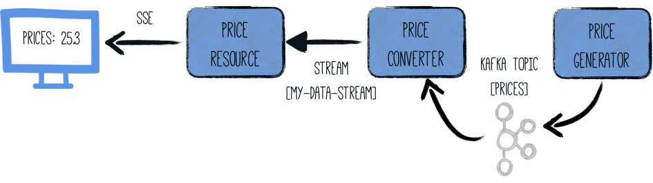

Quarkus - Using Apache Kafka with Reactive Messaging
このガイドでは、Quarkus アプリケーションが MicroProfile Reactive Messaging 利用して Apache Kafka とやりとりする仕組みを説明します。
前提条件
このガイドを完成させるには、以下が必要です:
-
less than 15 minutes
-
IDE
-
JDK 1.8+ がインストールされ、
JAVA_HOMEが適切に設定されていること -
Apache Maven 3.6.2+
-
実行中の Kafka クラスター、または開発クラスターを開始するための Docker Compose
-
ネイティブモードで実行する場合は、GraalVM がインストールされていること
アーキテクチャ
このガイドでは、1 つのコンポーネントでランダムな価格 (price) を生成します。これらの価格は、Kafka トピック (prices)
に書かれています。2 番目のコンポーネントは prices Kafka トピックから読み込み、この価格に変換を適用します。その結果は、JAX-RS
リソースによって消費されるインメモリーストリームに送られます。データは、サーバーから送信されたイベントを使用してブラウザーに送信されます。

ソリューション
次の章で紹介する手順に沿って、ステップを踏んでアプリを作成することをお勧めします。ただし、完成した例にそのまま進んでも構いません。
Gitレポジトリをクローンするか git clone https://github.com/quarkusio/quarkus-quickstarts.git 、
アーカイブ をダウンロードします。
このソリューションは kafka-quickstart
directory にあります。
Creating the Maven Project
まず、新しいプロジェクトが必要です。以下のコマンドで新規プロジェクトを作成します。
mvn io.quarkus:quarkus-maven-plugin:1.7.6.Final:create \
-DprojectGroupId=org.acme \
-DprojectArtifactId=kafka-quickstart \
-Dextensions="smallrye-reactive-messaging-kafka"
cd kafka-quickstartこのコマンドにより、Maven プロジェクトが作成され、Reactive Messaging と Kafka コネクターエクステンションをインポートします。
すでに Quarkus プロジェクトが設定されている場合は、プロジェクトのベースディレクトリーで以下のコマンドを実行して、プロジェクトに
smallrye-reactive-messaging-kafka エクステンションを追加することができます。
./mvnw quarkus:add-extension -Dextensions="smallrye-reactive-messaging-kafka"これにより、 pom.xml に以下が追加されます:
<dependency>
<groupId>io.quarkus</groupId>
<artifactId>quarkus-smallrye-reactive-messaging-kafka</artifactId>
</dependency>Starting Kafka
次に、Kafka クラスターが必要です。https://kafka.apache.org/quickstart[Apache Kafka の Web
サイト] の指示に従うか、以下の内容の docker-compose.yaml ファイルを作成します。
version: '2'
services:
zookeeper:
image: strimzi/kafka:0.11.3-kafka-2.1.0
command: [
"sh", "-c",
"bin/zookeeper-server-start.sh config/zookeeper.properties"
]
ports:
- "2181:2181"
environment:
LOG_DIR: /tmp/logs
kafka:
image: strimzi/kafka:0.11.3-kafka-2.1.0
command: [
"sh", "-c",
"bin/kafka-server-start.sh config/server.properties --override listeners=$${KAFKA_LISTENERS} --override advertised.listeners=$${KAFKA_ADVERTISED_LISTENERS} --override zookeeper.connect=$${KAFKA_ZOOKEEPER_CONNECT}"
]
depends_on:
- zookeeper
ports:
- "9092:9092"
environment:
LOG_DIR: "/tmp/logs"
KAFKA_ADVERTISED_LISTENERS: PLAINTEXT://localhost:9092
KAFKA_LISTENERS: PLAINTEXT://0.0.0.0:9092
KAFKA_ZOOKEEPER_CONNECT: zookeeper:2181作成したら、docker-compose up を実行します。
| これは開発クラスターであり、本番では使用しないでください。 |
価格ジェネレーター
以下の内容の src/main/java/org/acme/kafka/PriceGenerator.java ファイルを作成します。
package org.acme.kafka;
import io.reactivex.Flowable;
import org.eclipse.microprofile.reactive.messaging.Outgoing;
import javax.enterprise.context.ApplicationScoped;
import java.util.Random;
import java.util.concurrent.TimeUnit;
/**
* A bean producing random prices every 5 seconds.
* The prices are written to a Kafka topic (prices). The Kafka configuration is specified in the application configuration.
*/
@ApplicationScoped
public class PriceGenerator {
private Random random = new Random();
@Outgoing("generated-price") (1)
public Flowable<Integer> generate() { (2)
return Flowable.interval(5, TimeUnit.SECONDS)
.map(tick -> random.nextInt(100));
}
}| 1 | 返されたストリームから generated-price にアイテムをディスパッチするように Reactive Messaging に指示します。 |
| 2 | The method returns a RX Java 2 stream (Flowable) emitting a random
price every 5 seconds. |
このメソッドは、Reactive Stream を返します。生成されたアイテムは generated-price
という名前のストリームに送られます。このストリームは、次に作成する application.properties ファイルを使用して Kafka
にマッピングされます。
価格 (price) コンバーター
価格コンバーターは、Kafka から価格を読み込んで変換します。以下の内容の
src/main/java/org/acme/kafka/PriceConverter.java ファイルを作成します。
package org.acme.kafka;
import io.smallrye.reactive.messaging.annotations.Broadcast;
import org.eclipse.microprofile.reactive.messaging.Incoming;
import org.eclipse.microprofile.reactive.messaging.Outgoing;
import javax.enterprise.context.ApplicationScoped;
/**
* A bean consuming data from the "prices" Kafka topic and applying some conversion.
* The result is pushed to the "my-data-stream" stream which is an in-memory stream.
*/
@ApplicationScoped
public class PriceConverter {
private static final double CONVERSION_RATE = 0.88;
@Incoming("prices") (1)
@Outgoing("my-data-stream") (2)
@Broadcast (3)
public double process(int priceInUsd) {
return priceInUsd * CONVERSION_RATE;
}
}| 1 | このメソッドが prices トピックのアイテムを消費することを示します。 |
| 2 | このメソッドによって返されたオブジェクトが my-data-stream ストリームに送られることを示します。 |
| 3 | アイテムがすべての サブスクライバー に発送されていることを示します。 |
process メソッドは、prices トピック (アプリケーションコンフィグレーションの中で設定) からの Kafka record
ごとに呼び出されます。すべての結果は my-data-stream インメモリーストリームに送信されます。
価格リソース
最後に、ストリームを JAX-RSリソース にバインドしてみましょう。以下の内容の
src/main/java/org/acme/kafka/PriceResource.java ファイルを作成します。
package org.acme.kafka;
import io.smallrye.reactive.messaging.annotations.Channel;
import org.reactivestreams.Publisher;
import javax.inject.Inject;
import javax.ws.rs.GET;
import javax.ws.rs.Path;
import javax.ws.rs.Produces;
import javax.ws.rs.core.MediaType;
import org.jboss.resteasy.annotations.SseElementType;
/**
* A simple resource retrieving the in-memory "my-data-stream" and sending the items as server-sent events.
*/
@Path("/prices")
public class PriceResource {
@Inject
@Channel("my-data-stream") Publisher<Double> prices; (1)
@GET
@Path("/stream")
@Produces(MediaType.SERVER_SENT_EVENTS) (2)
@SseElementType("text/plain") (3)
public Publisher<Double> stream() { (4)
return prices;
}
}| 1 | @Channel の修飾子を使って my-data-stream チャンネルを注入します。 |
| 2 | Server Sent Events を使用してコンテンツが送信されたことを示します。 |
| 3 | サーバーから送信されたイベントに含まれるデータのタイプが text/plain であることを示します。 |
| 4 | ストリーム (Reactive Stream) を返します。 |
Configuring the Kafka connector
Kafka コネクターを設定する必要があります。これは application.properties
ファイルで行います。このキーは以下のような構造になっています。
mp.messaging.[outgoing|incoming].{channel-name}.property=value
channel-name セグメントは、 @Incoming および @Outgoing
アノテーションで設定された値と一致する必要があります。
-
generated-price→ sink (価格の書き込み先) -
prices→ source (価格の読み取り先)
# Configure the SmallRye Kafka connector
kafka.bootstrap.servers=localhost:9092
# Configure the Kafka sink (we write to it)
mp.messaging.outgoing.generated-price.connector=smallrye-kafka
mp.messaging.outgoing.generated-price.topic=prices
mp.messaging.outgoing.generated-price.value.serializer=org.apache.kafka.common.serialization.IntegerSerializer
# Configure the Kafka source (we read from it)
mp.messaging.incoming.prices.connector=smallrye-kafka
mp.messaging.incoming.prices.value.deserializer=org.apache.kafka.common.serialization.IntegerDeserializerこの設定の詳細は、Kafka ドキュメントの
Producer 設定 と
Consumer 設定
のセクションを参照してください。これらのプロパティは、kafka という接頭辞で設定されます。
my-data-stream はどうでしょうか? これはインメモリストリームであり、メッセージブローカーには接続されていません。
|
The HTML page
最後に、SSE を使って変換された価格を読み込む HTML ページです。
以下の内容の src/main/resources/META-INF/resources/prices.html ファイルを作成します。
<!DOCTYPE html>
<html lang="en">
<head>
<meta charset="UTF-8">
<title>Prices</title>
<link rel="stylesheet" type="text/css"
href="https://cdnjs.cloudflare.com/ajax/libs/patternfly/3.24.0/css/patternfly.min.css">
<link rel="stylesheet" type="text/css"
href="https://cdnjs.cloudflare.com/ajax/libs/patternfly/3.24.0/css/patternfly-additions.min.css">
</head>
<body>
<div class="container">
<h2>Last price</h2>
<div class="row">
<p class="col-md-12">The last price is <strong><span id="content">N/A</span> €</strong>.</p>
</div>
</div>
</body>
<script src="https://code.jquery.com/jquery-3.3.1.min.js"></script>
<script>
var source = new EventSource("/prices/stream");
source.onmessage = function (event) {
document.getElementById("content").innerHTML = event.data;
};
</script>
</html>特に目を見張るようなものは何もありません。受信した価格ごとに、ページが更新されます。
実行
指示に従えば、Kafka が起動しているはずです。あとは、以下でアプリケーションを実行するだけです。
./mvnw quarkus:devブラウザーで http://localhost:8080/prices.html を開いてください。
Kafka ブローカーを docker compose で起動した場合は、CTRL+C に続いて docker-compose down
で停止します。
|
命令的な使用法
時には、命令的な方法でメッセージを送ることが必要になる場合もあります。
例えば、POST リクエストを受信したときに、REST
エンドポイントの内部からストリームにメッセージを送信する必要があるとします。この場合、メソッドにはパラメーターがあるため、@Output
を使用することはできません。
この場合には Emitter が利用できます。
import org.eclipse.microprofile.reactive.messaging.Channel;
import org.eclipse.microprofile.reactive.messaging.Emitter;
import javax.inject.Inject;
import javax.ws.rs.POST;
import javax.ws.rs.Path;
import javax.ws.rs.Consumes;
import javax.ws.rs.core.MediaType;
@Path("/prices")
public class PriceResource {
@Inject @Channel("price-create") Emitter<Double> priceEmitter;
@POST
@Consumes(MediaType.TEXT_PLAIN)
public void addPrice(Double price) {
priceEmitter.send(price);
}
}
Emitter の設定は、@Incoming と @Outgoing
が使用する他のストリームの設定と同じ方法で行います。さらに、@OnOverflow を使用して、バックプレッシャー戦略を設定することができます。
|
|
非推奨
新しい |
Kafka Health Check
quarkus-smallrye-health エクステンションを使用している場合、quarkus-kafka
は、ブローカーへの接続を検証するためにレディネスヘルスチェックを追加することができます。これはデフォルトでは無効になっています。
If enabled, when you access the /health/ready endpoint of your application
you will have information about the connection validation status.
この動作を有効にするには、application.properties の quarkus.kafka.health.enabled
プロパティを true に設定します。
JSON serialization
Quarkus には、JSON Kafka メッセージを扱う機能が組み込まれています。
以下のように Fruit の pojo があると想像してみてください。
public class Fruit {
public String name;
public int price;
public Fruit() {
}
public Fruit(String name, int price) {
this.name = name;
this.price = price;
}
}そして、Kafka からメッセージを受信して、何らかの価格変換を行い、Kafka にメッセージを送り返すために使いたいと考えています。
import io.smallrye.reactive.messaging.annotations.Broadcast;
import org.eclipse.microprofile.reactive.messaging.Incoming;
import org.eclipse.microprofile.reactive.messaging.Outgoing;
import javax.enterprise.context.ApplicationScoped;
/**
* A bean consuming data from the "fruit-in" Kafka topic and applying some price conversion.
* The result is pushed to the "fruit-out" stream.
*/
@ApplicationScoped
public class FruitProcessor {
private static final double CONVERSION_RATE = 0.88;
@Incoming("fruit-in")
@Outgoing("fruit-out")
@Broadcast
public double process(Fruit fruit) {
fruit.price = fruit.price * CONVERSION_RATE;
return fruit;
}
}To do this, we will need to setup JSON serialization with JSON-B or Jackson.
JSON シリアライゼーションが正しく設定されていれば、 Publisher<Fruit> や Emitter<Fruit> も利用できます。
|
Serializing via JSON-B
まず、quarkus-jsonb のエクステンションを含める必要があります (すでに quarkus-resteasy-jsonb
のエクステンションを使用している場合は不要です)。
<dependency>
<groupId>io.quarkus</groupId>
<artifactId>quarkus-jsonb</artifactId>
</dependency>JSON-B によってすべての pojos をシリアライズするために使用できる既存の JsonbSerializer
があります。ただし、対応するデシリアライザーは汎用的なものなので、サブクラス化する必要があります。
そこで、一般的な JsonbDeserializer を拡張した FruitDeserializer を作成してみましょう。
package com.acme.fruit.jsonb;
import io.quarkus.kafka.client.serialization.JsonbDeserializer;
public class FruitDeserializer extends JsonbDeserializer<Fruit> {
public FruitDeserializer(){
// pass the class to the parent.
super(Fruit.class);
}
}
pojo に個別にデシリアライザーを作成したくない場合は、javax.json.JsonObject にデシリアライズする汎用の
io.vertx.kafka.client.serialization.JsonObjectDeserializer
を使用することができます。対応するシリアライザーも使用できます。io.vertx.kafka.client.serialization.JsonObjectSerializer
|
最後に、JSON-B シリアライザーとデシリアライザーを使用するようにストリームを設定します。
# Configure the Kafka source (we read from it)
mp.messaging.incoming.fruit-in.connector=smallrye-kafka
mp.messaging.incoming.fruit-in.topic=fruit-in
mp.messaging.incoming.fruit-in.value.deserializer=com.acme.fruit.jsonb.FruitDeserializer
# Configure the Kafka sink (we write to it)
mp.messaging.outgoing.fruit-out.connector=smallrye-kafka
mp.messaging.outgoing.fruit-out.topic=fruit-out
mp.messaging.outgoing.fruit-out.value.serializer=io.quarkus.kafka.client.serialization.JsonbSerializerこれで、Kafka のメッセージには、JSON-B でシリアライズされた Fruit pojo の表現が含まれます。
Serializing via Jackson
まず、quarkus-jackson のエクステンションを含める必要があります (すでに quarkus-resteasy-jackson
のエクステンションを使用している場合は、これは必要ありません)。
<dependency>
<groupId>io.quarkus</groupId>
<artifactId>quarkus-jackson</artifactId>
</dependency>Jackson によって全ての POJO をシリアルに変換することができる既存の ObjectMapperSerializer
があります。ただし、対応するデシリアライザーは汎用的なものなので、サブクラス化する必要があります。
そこで、ObjectMapperDeserializer を拡張した FruitDeserializer を作成してみましょう。
package com.acme.fruit.jackson;
import io.quarkus.kafka.client.serialization.ObjectMapperDeserializer;
public class FruitDeserializer extends ObjectMapperDeserializer<Fruit> {
public FruitDeserializer(){
// pass the class to the parent.
super(Fruit.class);
}
}最後に、Jackson シリアライザーとデシリアライザーを使用するようにストリームを設定します。
# Configure the Kafka source (we read from it)
mp.messaging.incoming.fruit-in.connector=smallrye-kafka
mp.messaging.incoming.fruit-in.topic=fruit-in
mp.messaging.incoming.fruit-in.value.deserializer=com.acme.fruit.jackson.FruitDeserializer
# Configure the Kafka sink (we write to it)
mp.messaging.outgoing.fruit-out.connector=smallrye-kafka
mp.messaging.outgoing.fruit-out.topic=fruit-out
mp.messaging.outgoing.fruit-out.value.serializer=io.quarkus.kafka.client.serialization.ObjectMapperSerializerこれで、Kafka メッセージには、Fruit pojo の Jackson によるシリアライズ表現が含まれるようになります。
Sending JSON Server-Sent Events (SSE)
RESTEasy で JSON Server-Sent Events を送信したい場合は、@SseElementType
アノテーションを使用してイベントのコンテンツタイプを定義する必要があります。これは、このメソッドが
@Produces(MediaType.SERVER_SENT_EVENTS) のアノテーションが付くためです。
次の例は、Kafka トピックソースから SSE を使用する方法を示しています。
import io.smallrye.reactive.messaging.annotations.Channel;
import org.reactivestreams.Publisher;
import javax.inject.Inject;
import javax.ws.rs.GET;
import javax.ws.rs.Path;
import javax.ws.rs.Produces;
import javax.ws.rs.core.MediaType;
import org.jboss.resteasy.annotations.SseElementType;
@Path("/fruits")
public class PriceResource {
@Inject
@Channel("fruit-out") Publisher<Fruit> fruits;
@GET
@Path("/stream")
@Produces(MediaType.SERVER_SENT_EVENTS)
@SseElementType(MediaType.APPLICATION_JSON)
public Publisher<Fruit> stream() {
return fruits;
}
}ブロッキング処理
Reactive Messaging
とデータベースインタラクションなどのブロッキング処理を組み合わせる必要がある状況は少なくありません。そのためには、処理が ブロックしていて
呼び出し元のスレッドで実行できないこと示している @Blocking アノテーションを使用する必要があります。
例えば、以下のコードは、Hibernate with Panacheを 使用してデータベースに受信ペイロードを格納する方法を示しています。
package org.acme.panache;
import io.smallrye.reactive.messaging.annotations.Blocking;
import org.eclipse.microprofile.reactive.messaging.Incoming;
import javax.enterprise.context.ApplicationScoped;
import javax.transaction.Transactional;
@ApplicationScoped
public class PriceStorage {
@Incoming("prices")
@Blocking
@Transactional
public void store(int priceInUsd) {
Price price = new Price();
price.value = priceInUsd;
price.persist();
}
}完全な例は kafka-panache-quickstart
ディレクトリー にあります。
さらに詳しく
このガイドでは、Quarkus を使用して Kafka とやりとりする方法を示しました。MicroProfile Reactive Messaging を利用して、データストリーミングアプリケーションを構築します。
さらに詳しく知りたい場合は、Quarkusで使用されている実装である SmallRye Reactive Messaging のドキュメントを確認してください。